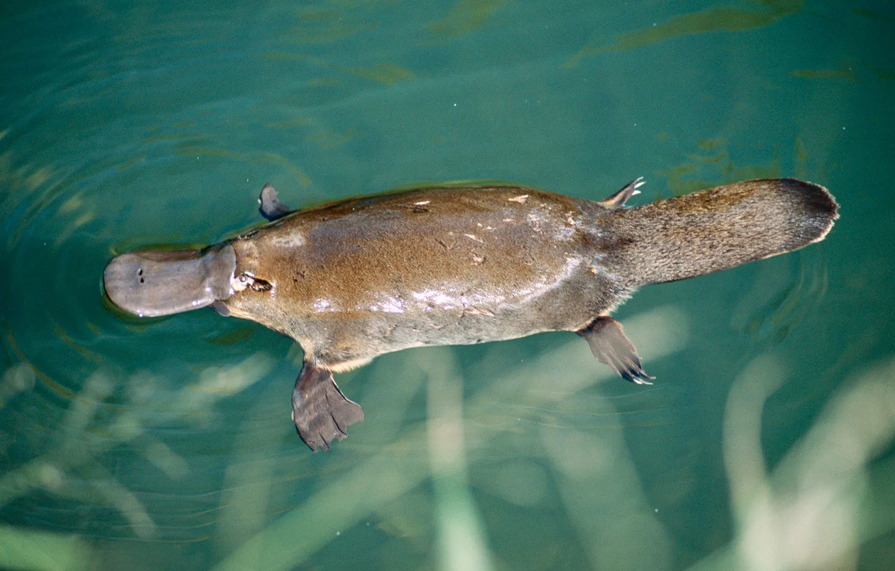

Hello, this website is an overview on the platypus. Platypuses are semi aquatic animals that reside in Eastern Australia. They are carnivores who feed on shrimp, worms, and anything else it digs up.
Platypuses are a protected species due to being hunted for its fur. They were discovered in 1799 but scientists initially dismissed the discovery due to the odd nature of the animal (duckbill, beaver tail, etc).
Photo by Britannica